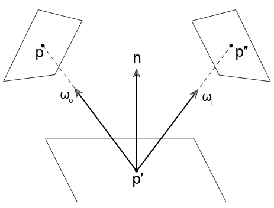
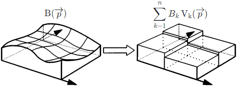

The main idea of FEM (Finite Element Method) is to convert the
infinite problem of solving a differential equation into the
finite problem of solving a set of simultaneous linear equations.
Let f(x) be the solution of a differential
equation which can be written as f(x)=P(f(x)).
We try to approximate the f(x) by the basis functionsk=1∑nfkvk(x). The idea of the basis functions in
FEM is similar to SH (Spherical Harmonics) or Fourier. But
since the aim of the FEM is usually to discretize the domain of f(x), the basis functions in FEM is much
simpler than in SH or Fourier. For example, when the domain of f(x) is [0, 1], let v1(x)={10x∈[0,21]x∈[21,1] and
v2(x)={01x∈[0,21]x∈[21,1],
evidently v1(x) and v2(x) are orthogonal.
Let r(x)=k=1∑nfkvk(x)−P(k=1∑nfkvk(x)) be the residual. The
projection of the residual onto each basis function should be zero. This means that, for j = 1
... n, we have ∫r(x)vj(x)=0 (of which the R(x)=r(x)vj(x) is also called the weighted
residual). And we have the simultaneous linear equations about the coefficients
fk.
Rendering Equation
The Rendering Equation is also called the LTE (Light
Transport Equation) by "14.4 The Light Transport Equation" of PBR
Book V3. And we have the Rendering EquationLo(p,ωo)=Le(p,ωo)+∫Ωf(p,ωi,ωo)Li(p,ωi)(cosθi)+dωi.
According to the Rendering Equation, by OSL (Open Shading Language), the
surface and the light are actually the same thing, since the light is merely the surface which is emissive.
By "Figure 11.1" of Real-Time Rendering Fourth
Edition and "Figure 14.14" of PBR
Book V3, by assuming no participating media, we have the relationship Li(p,ωi)=Lo(r(p,ωi),−ωi) where r(p,ω) is the ray-casting function. This means
that the incident radiance Li(p,ωi) at one point p is exactly the exitant
radiance Lo(r(p,ωi),−ωi) at another point r(p,ωi).
Hence, both the incident radiance Li(p,ω) and the exitant radiance Lo(p,ω) can be represented by the same function
L(p,ω). And thus, we have L(p,ωo)=Le(p,ωo)+∫Ωf(p,ωi,ωo)L(r(p,ωi),−ωi)(cosθi)+dωi which is a differential equation of which the solution is the L(p,ω).
Thus, the problem of rendering is essentially a problem of solving the differential
equation. There are two independent approaches: ray tracing (which depends on the Fredholm
theory) and radiosity (which depends on the FEM).
Note that the term radiosity B has been deprecated and should be called
radiant exitance M or outgoing irradiance E instead. But to be consistent with
most literature about radiosity, we still use radiosity B here.
By "Equation (5.6)" of PBR
Book V3, we have the relationship dω=r2cosθdA.
By "Equation (14.14)" of PBR
Book V3, let V be the visibility function and we have the surface form of the rendering equation L(p′→p)=Le(p′→p)+∫Af(p′′→p′→p)V(p′′↔p′)L(p′′→p′)(cosθ′)+∥p′′−p′∥2(cosθ′′)+dA(p′′)=Le(p′→p)+∫Af(p′′→p′→p)L(p′′→p′)G(p′′→p′)dA(p′′) where integral interval A is the area of all the surfaces
in the scene and G(p′′→p′)=V(p′′↔p′)∥p′′−p′∥2(cosθ′)+(cosθ′′)+.

We assume that the Lambert BRDF f(p′′→p′→p)=π1ρss(p′) is used. This means that the outgoing
radiance is the same in all directions and we have the relationship L(p′→p)=πB(p′) where the B(p′) does NOT depend on the direction p′→p. Hence, by "Equation (2.54)" of [Cohen 1993], the rendering equation can be written as the
radiosity equationπB(p′)=πBe(p′)+∫Aπ1ρss(p′)πB(p′′)G(p′′→p′)dA(p′′) ⇒ B(p′)=Be(p′)+π1ρss(p′)∫AB(p′′)G(p′′→p′)dA(p′′) ⇒ B(p)=Be(p)+π1ρss(p)∫AB(p′)G(p′→p)dA(p′).
By "Equation (3.2)" of [Cohen 1993], by FEM, the surface is
discretized into n patches, and the solution of the radiosity equationB(p) is approximated by n basis
functionsj=1∑nBjNj(p). And by "Equation (3.3)" of
[Cohen 1993], the basis function can be really simple, for example, the constant basis Nj(p)={10p∈Ajp∈/Aj where
Aj is the area of the ith patch surface.

By "Equation (3.4)" of [Cohen 1993], we have the residualr(p)=j=1∑nBjNj(p)−(Be(p)+π1ρss(p)∫A(j=1∑nBjNj(p))G(p′→p)dA(p′))=j=1∑nBjNj(p)−Be(p)−π1ρss(p)∫A(j=1∑nBjNj(p))G(p′→p)dA(p′).
By "Equation (3.19)" of [Cohen 1993], the projection of the residual onto each basis
function should be zero. This means that, for i = 1 ... n, we have 0=∫Ar(p)Ni(p)dA(p)=∫A(j=1∑nBjNj(p)−Be(p)−π1ρss(p)∫A(j=1∑nBjNj(p))G(p′→p)dA(p′))Ni(p)dA(p)=BiAi−BieAi−Aiρissj=1∑nFijBj where Ai is the area of the ith patch surface, Be(p) is the assumed to be the constant Bie over the ith patch surface, ρss(p) is the assumed to be the constant ρiss over the ith patch surface and Fij=Ai1π1∫Ai∫AjG(p′→p)dA(p′)dA(p) is the form factor. This means that Bi=Bie+ρissj=1∑nFijBj which is exactly the "Equation (11.4)" of Real-Time
Rendering Fourth Edition.
Proof
By Linearity Property, we have ∫A(j=1∑nBjNj(p)−Be(p)−π1ρss(p)∫A(j=1∑nBjNj(p))G(p′→p)dA(p′))Ni(p)dA(p)=∫A(j=1∑nBjNj(p))Ni(p)dA−∫ABe(p)Ni(p)dA(p)−∫A(π1ρss(p)∫A(j=1∑nBjNj(p))G(p′→p)dA(p′))Ni(p)dA(p)
First, we would like to prove that ∫A(j=1∑nBjNj(p))Ni(p)dA(p)=BiAi.
By Linearity Property, we have
∫A(j=1∑nBjNj(p))Ni(p)dA(p)=j=1∑n∫ABjNj(p)Ni(p)dA(p).
Since Nj(p)={10p∈Ajp∈/Aj
, we have j=1∑n∫ABjNj(p)Ni(p)dA(p)=∫ABiNi(p)Ni(p)dA(p)=∫AiBidA(p)=BiAi
Second, we would like to prove that ∫ABe(p)Ni(p)dA(p)=BieAi.
Since Nj(p)={10p∈Ajp∈/Aj
, we have ∫ABe(p)Ni(p)dA(p)=∫AiBe(p)dA(p).
Since Be(p) is the assumed to be the constant
Bie over the ith patch surface, we have ∫AiBe(p)dA(p)=BieAi.
Third, we would like to prove that ∫A(π1ρss(p)∫A(j=1∑nBjNj(p))G(p′→p)dA(p′))Ni(p)dA(p)=Aiρissj=1∑nFijBj.
By Linearity Property, we have
∫A(π1ρss(p)∫A(j=1∑nBjNj(p))G(p′→p)dA(p′))Ni(p)dA(p)=j=1∑n∫A(π1ρss(p)∫ABjNj(p)G(p′→p)dA(p′))Ni(p)dA(p).
Since Ni(p)={10p∈Aip∈/Ai
and Nj(p)={10p∈Ajp∈/Aj
, we have j=1∑n∫A(π1ρss(p)∫ABjNj(p)G(p′→p)dA(p′))Ni(p)dA(p)=j=1∑n∫Ai(π1ρss(p)∫AjBjG(p′→p)dA(p′))dA(p).
Since ρss(p) is the assumed to be the constant
ρiss over the ith patch surface, we have j=1∑n∫Ai(π1ρss(p)∫AjBjG(p′→p)dA(p′))dA(p)=ρissj=1∑nπ1Bj∫Ai(∫AjG(p′→p)dA(p′))dA(p)=Aiρissj=1∑n(Ai1π1∫Ai∫AjG(p′→p)dA(p′)dA(p))Bj=Aiρissj=1∑nFijBj